为了给学妹复习C语言而复习C语言。。。
用的IDE是老当益壮的DevC++，对课程中的部分代码进行了修改。
老规矩，在更新完后，如果需要md文件的可以在文末查看关键词。
1.C语言基本语句（上）
1.固定格式
1 |
|
2.printf语句
样例：printf语句
1 |
|
输出结果：
1 | hello,world! |
加’\n’,变成
1 |
|
输出结果：
1 | hello |
加’\t’,变成
1 |
|
输出结果为：
1 | hello , world ! |
3.用printf语句输出int、float、double、char 型数据
1 | int a=3; |
样例1：输出int型数据
1 | #include<stdio.h> |
输出结果为：
1 | a=5,b=7,c=2,d=10,e=0,f=5 |
样例2：输出double型数据
1 |
|
输出结果为：
1 | a=3.67,b=5.43,c=6.00,d=7.55 |
样例3：输出char型数据
字符型可以加上或减去数字得到字符（对应ASCII码）
1 |
|
输出结果为：
1 | a=P,b=p,c=h |
4.用scanf 语句输入int、float、double、char型数据
输入int型样例
1 | int a,b; |
###
1 | #include<stdio.h> |
输入数据：
1 | 1 2 |
输出结果为：
1 | 1与2的平均数为1 |
输入float、double型样例
1 | float a; |
输入char型样例
1 | char a,b; |
请编程序，输入一个大写字母，可以输出一个小写字母。
1 |
|
键盘输入A，输出结果为：
1 | A的小写字母是a |
2.C语言基本语句（下）
5.putchar()、getchar()语句
1 | #include<stdio.h> |
键盘输入
1 | PANDA |
输出结果为：
1 | pan |
6.$e^x$,$\log$等数学运算
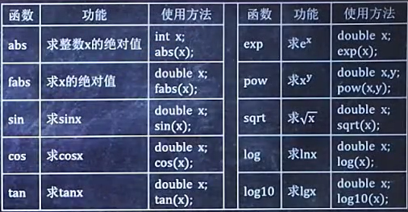
1.给出三角形三边a、b、c的长，利用公式$area=\sqrt{s(s-a)(s-b)(s-c)}$求该三角形的面积area（$s=\frac{a+b+c}{2}$
1 | #include<stdio.h> |
键盘输入
1 | 3 4 5 |
输出结果为
1 | area=6.000000 |
2.利用公式$x=\frac{-b \pm \sqrt{b^2-4ac}}{2a}$，求$a^2x+bx+c=0$的根，a,b,c由键盘输入，且$b^2-4ac>0$
1 |
|
键盘输入
1 | 1 2 1 |
输出结果为
1 | x1=-1.000000,x2=-1.000000 |
3.选择语句
1.if语句
1.例1，输入一个整数，如果该数大于等于60小于80，则输出“及格”；如果大于80则输出“优秀”，如果该数不大于60，则输出“不及格”。
1 |
|
键盘输入
1 | 60 |
输出结果为：
1 | 及格 |
2.例2，输入两个实数a、b，按数值由小到大的顺序输出这两个数。
1 |
|
键盘输入：
1 | 2 3 |
输出结果为：
1 | 2.000000<3.000000 |
2.常见表达式
1 | > |
1.样例1，判断某年是否为闰年
请编一程序，判断某一年是否是闰年。（注：当年份不是100的倍数且是4的倍数时，该年是闰年；当年份是100的倍数且是400的倍数时，该年也是闰年）
1 |
|
键盘输入
1 | 2013 |
输出结果为：
1 | 2013不是闰年 |
2.样例2，输入一个字符，判断它是否为大写字母，若是则将其转换成小写字母，若不是则不转换，然后输出最后得到的字符。
1 |
|
键盘输入
1 | A |
输出结果为：
1 | a |
3.表达式1?表达式2:表达式3
3.样例2另一写法
1 |
|
4.switch语句
1 | switch(整型变量或字符型变量){ |
某课成绩原为A、B、C、D四个等级，现要将其转成百分制分数段，规则是：A等转成85100，B等转成7084，C等转成60~69，D等转成<60。请编一程序，成绩等级由键盘输入，输出分数段。
1 |
|
键盘输入
1 | B |
输出结果为
1 | 70-84 |
4.循环语句
1.用while 语句循环做数学运算
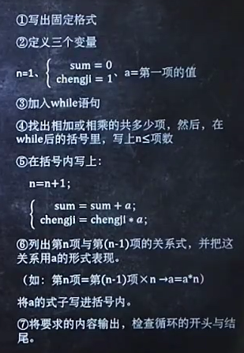
1.求2+4+6+…+100
1 |
|
2.求2×4×6×8x…×100
1 |
|
2.用while语句循环
猴博士今儿纳妃，有一堆母猴排着队一个接一个地给他表演才艺以求被选上。猴博士总共只肯看她们300分钟。请编程统计300分钟后，猴博士看了多少只母猴。
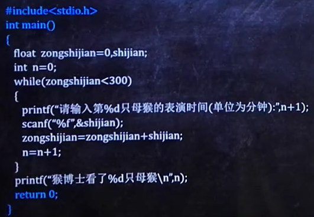
3.用break提前终止循环
猴博士今儿纳妃，有一堆母猴排着队一个接一个地给他表演才艺以求被选上。猴博士总共只肯看她们300分钟，并且最多乐意看100只母猴。请编程统计猴博士看了多少只母猴，总共看了几分钟。
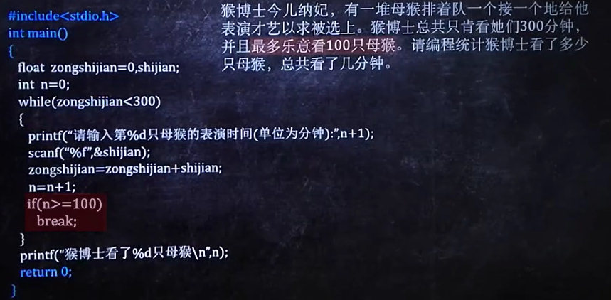
4.用continue语句提前结束本次循环
请编程输出100~300之间（包括100与300）不能被4整除的数。
1 |
|
输出结果为
1 | 101 102 103 105 106 107 109 110 111 113 114 115 117 118 119 |
5.用do…while语句循环
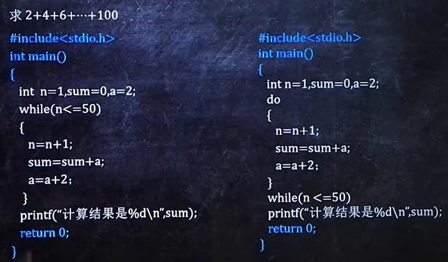
6.用for循环
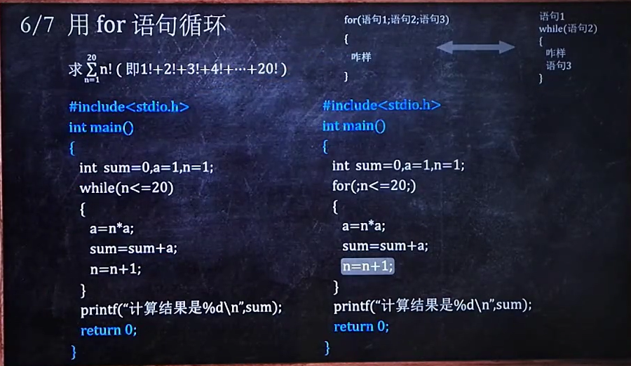
7.while语句、do…while语句、for语句的区别
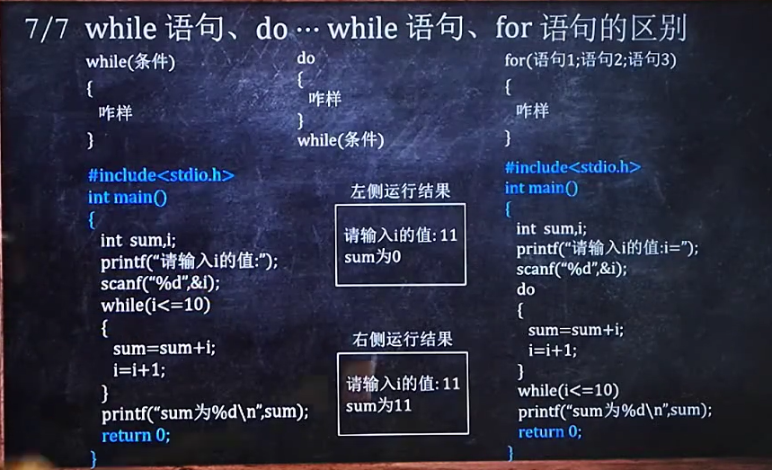
5.数组
选择法/冒泡法（沉底法）
1.定义一维数组
输入10个地区的面积（面积为整数），对它们由小到大排序并输出排序后的结果。
1 |
|
键盘输入
1 | 1 3 5 7 9 2 4 6 8 10 |
输出结果为
1 | 1,9,3,5,7,2,4,6,8,10, |
2.定义二维数组
1.将一个二维数组a=[[1,2,3],[4,5,6]]的行列元素互换，存到另一个二维数组b中并输出。
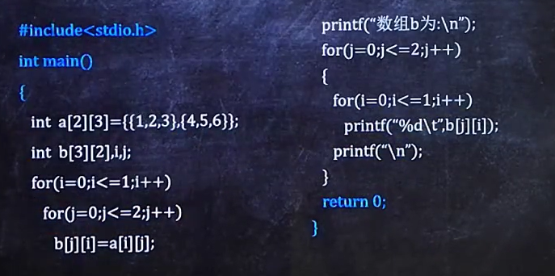
2.已知a=[[1,2,3],[9,8,7],[-10,10,-5]]，请编程求出其中值最大的那个元素。
1 | #include<stdio.h> |
3.定义字符数组
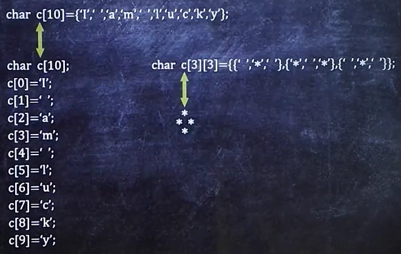
4.输出字符数组
定义一个字符串“hello world”，然后输出这个字符串。
1 |
|
5.输入字符数组
将”hello world”存入数组
1 |
|
输入一行由空格和单词组成的字符（字符数在80以内），请统计有多少个单词。
1 |
|
6.函数
1.调用有参函数
编写一程序，要求用户输入4个数字，输出前两个数中的最大数、后两个数中的最大数以及四个数中的最大数。
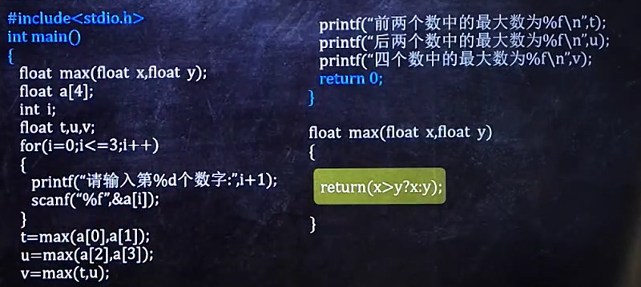
有两个小组，分别有5名学生和10名学生。请编程输入这些学生的成绩，并调用一个aver函数求这两个小组的平均分。
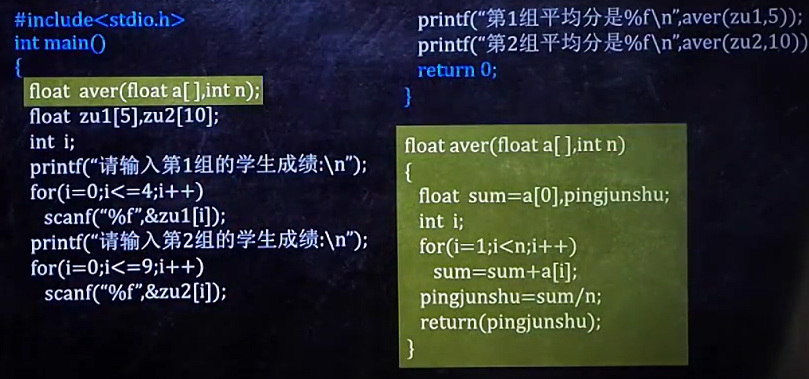
2.调用无参函数
请编程输入10个整数，并将这10个数由小到大排序。
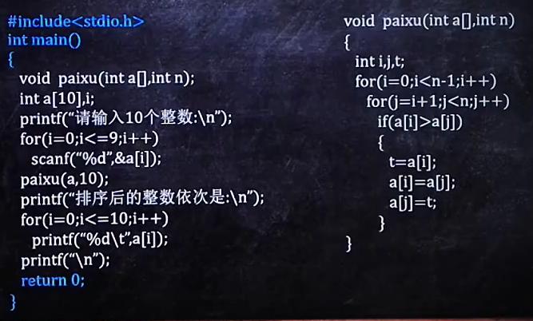
3.函数的嵌套
请编程输入4个整数，并找出其中最大的数。
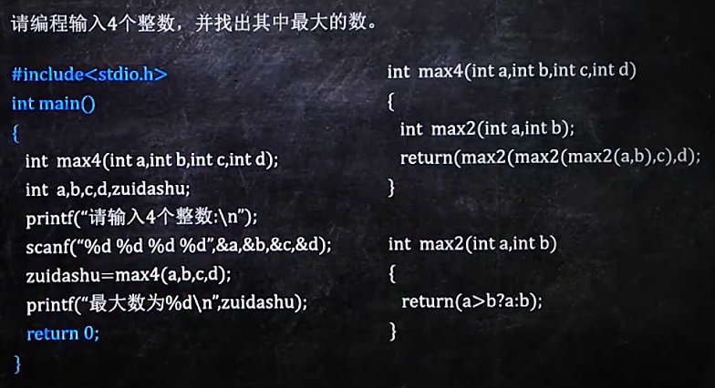
4.函数的递归
1.有5个学生，第5个学生比第4个学生大2岁，第4个学生比第3个学生大2岁，第3个学生比第2个学生大2岁，第2个学生比第1个学生大2岁，第1个学生是10岁。请编程计算出第5个学生的年龄。
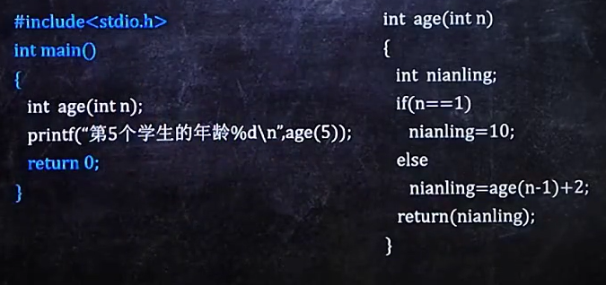
2.用递归方法求n！
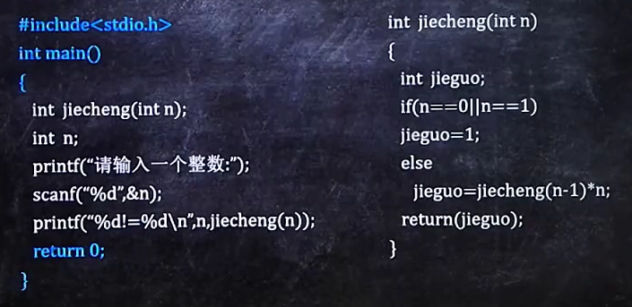